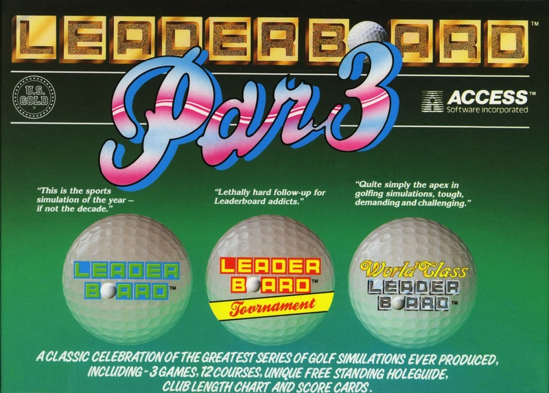
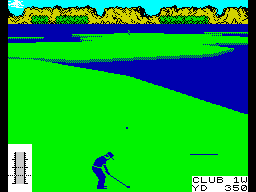

Leaderboard Par 3


{kind=link}

| Publisher: | US Gold |
| Price: | £14.99 Cass, 19.99 Disk |
| Year: | 1988 |
| Source: | CRASH, Issue 57 |

Play a round and score holes
Facts first: golf is the noble game invented by a Scotsman, where you hit a small round ball with a shaped club for miles, trying to get it into small holes placed inconveniently in the ground. It was invented near St Andrews, where the annual weather is such that this kind of exercise was the only way of keeping warm, 150 years ago. (Simply fascinating, but what about this game? — Ed.)
The ‘Par 3’ in the title refers to the three versions of Leader Board which make up the compilation. Neither World Class Leader Board nor Leader Board Tournament were reviewed in CRASH, but back in Issue 39, the original Leader Board earned a respectable 80%. Recently, World Class Leader Board won an award from a French chain-store as the best sport simulation of 1988.

anecdotes than Jimmy Tarbuck!
Each of the three games allows up to four players to compete in one to four rounds (18-72 holes) on any of four different courses, making a total of 12 in the whole compilation. And to allow complete novices to compete (on an equal part) against those hard-hitting, Sandy Lyle types, three skill levels are available.
One of the most important decisions in golf, is the choice of club. To help the player in his decision, the instructions contain a useful diagram of all the clubs and their range. Once a club is selected, the direction of the shot is selected by aiming a cursor in front of the golfer, who is shown in front of a 3-D view of the current hole.
Then it’s time to take a swing and hit the ball — power is selected via the Power Snap Indicator by releasing the fire button at the appropriate level. The ‘snap’ part of the indicator determines whether the ball is hooked (to the left), sliced (to the right) or flies straight.
When you eventually manage to get the ball on the green (the smooth bit of grass surrounding the hole) (OK, Phil, so you’ve proved that you watched the British Open this year on TV, now get on with it... — Ed), it’s time to get your putter out. (And that’s enough of that, too — Editorial Director.)
A slope indicator shows the inclination of the green (the groundsman’s spirit level is obviously on the blink!), this must be taken account of because it makes the ball’s path curve.
The extensive instructions contain many hints and tips (so that’s where Nick got them from!) to help the beginner, and the 12 courses give plenty of variety. As usual, the more players competing, the more fun It is. And for golf buffs or just normal people, Leader Board Par 3 scores a hole-in-one for value.
PHIL ... 90%
A HOLE LOT OF HELP!
- Choose the club which has a maximum range nearest the distance from the hole — this makes judging the power needed easier, because you can hit the ball with maximum strength.
- If your ball is just off the green, use a pitching wedge to chip it toward the hole.
- Try and avoid the water at all costs, as losing the ball automatically drops a stroke.
- Try and relax — tense shoulders are bad for your swing.
- And finally, wear a pair of shades to keep the sun (what sun? — Ed) out of your eyes!
Here is the ultimate in golf simulations. The variety of shots — all depicted in 3-D, right down to the putt — and things that can happen to your shot, is immense. Depending on which club you choose, how strongly you hit the ball and which way the wind is heading, you can either get a hole-in-one or send it flying into the water! The three games each have different hazards, from trees to pools of water and high winds, so you never get bored. A first class compilation of a sport that demands coordination and control — it’s got the lot.
NICK ... 92%
The Spectrum has a long history of golfing simulations, most of them as interesting as mowing grass. Leader Board ended that, and this compilation serves to underline the point; it makes golf great fun to play, even if you are the sort who groans every time you see someone in check plus-fours getting out his Number 2 Wood. Everything that made Leader Board playable, is here and more so, with more of it. Great value — get it!
PAUL ... 91%
THE ESSENTIALS
| Joysticks: | Kempston, Cursor, Sinclair |
| Graphics: | Excellent 3-D perspective for every hole |
| Sound: | Not much, but not so important for a game of this type |
| Options: | Up to four players can compete on a total of 12 courses |
| General rating: | The ultimate golf compilation — what more could any budding Nick Faldo (not Roberts!) want? |
| Presentation: | 94% |
| Graphics: | 83% |
| Playability: | 92% |
| Addictive qualities: | 93% |
| Overall: | 93% |